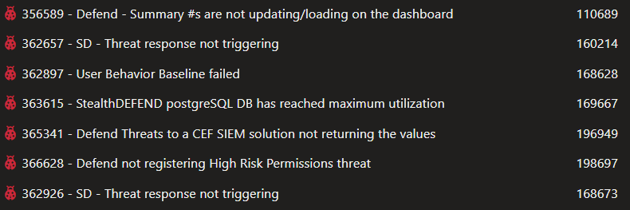
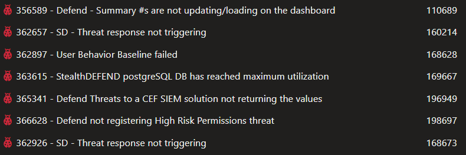

Summary:
In this hotfix we fixed various issues relating to StealthDEFEND 2.7 SP1:
Greg Connors
Affected Versions:
Prior versions of 2.7 SP1
Dev Tickets:

Resolved in Version 2.7.1685
https://downloads.stealthbits.com/access/files/SDHotfixes/StealthDEFEND_2.7.1685.zip
In this hotfix we fixed various issues relating to StealthDEFEND 2.7 SP1:
- Fixed an issue with summary #s not updating on the homepage
- Turned off forged tickets for computer objects
- Better error handling of pre-existing Python installations
Greg Connors
Affected Versions:
Prior versions of 2.7 SP1
Dev Tickets:

Resolved in Version 2.7.1685
https://downloads.stealthbits.com/access/files/SDHotfixes/StealthDEFEND_2.7.1685.zip